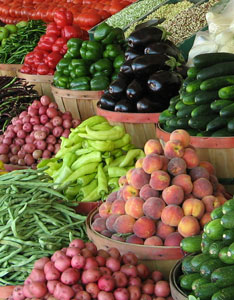

FLICKR/NATALIEMAYNOR
Farmers markets re-establish the personal ties between producers and consumers that do not exist in the impersonal confines of the supermarket. In the United States, the number of these markets increased from 1,755 in 1994 to more than 4,700 in mid-2009, nearly tripling over 15 years.